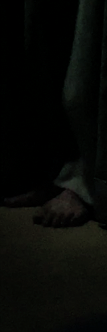
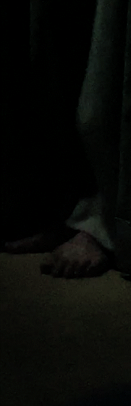
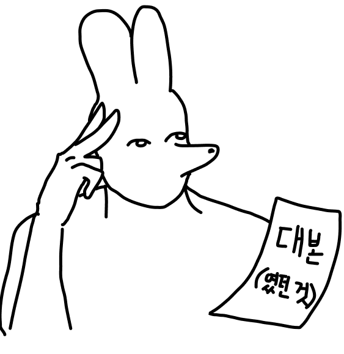

Making film


익숙한 곳이,
점점 이질감 들면 어떨까?
점점 이질감 들면 어떨까?
우리집이 우리집 같지 않은 순간들,
그런 생각으로 제작한 영상입니다.
어린 시절 밖에 나갔다 돌아오니, 문이 열려있던 적이 있었는데,
도어락을 제대로 닫지 않아 일어난 해프닝이었지만, 한동안 작은 소리에도 민감했던 기억이 납니다.
그런 생각으로 제작한 영상입니다.
어린 시절 밖에 나갔다 돌아오니, 문이 열려있던 적이 있었는데,
도어락을 제대로 닫지 않아 일어난 해프닝이었지만, 한동안 작은 소리에도 민감했던 기억이 납니다.
 

 이번 단편 영상에선
이번 단편 영상에선다양한 구도와 시선을 시도했다는 점이
좋았습니다.
하지만 좋은 것도 잠시, 촬영 전부터 한계가 있었으니..
1인 가구처럼 잘 꾸며진 숙소를 찾는 것도 어려웠고,
당시엔 준성수기 시즌이라 가격이 치솟기 시작했습니다.
괜찮은 숙소를 찾아도 높은 가격에 머뭇거렸습니다.
당일엔 가격이 내려가겠지, 내려가겠지 하며 기다렸으나, 가격은 변동없었습니다..
1인 가구처럼 잘 꾸며진 숙소를 찾는 것도 어려웠고,
당시엔 준성수기 시즌이라 가격이 치솟기 시작했습니다.
괜찮은 숙소를 찾아도 높은 가격에 머뭇거렸습니다.
당일엔 가격이 내려가겠지, 내려가겠지 하며 기다렸으나, 가격은 변동없었습니다..
그렇게...
해당 방 구조를 보며 쓴 시나리오는 숙소와 함께 버리게 됐습니다.
차라리 이 돈으로 더 괜찮은 숙소를 찾는게 나을 거 같다는 생각에
여차저차 돈을 털어 숙소를 구하는데...
촬영 전날에 급히 숙소를 구한지라,
촬영도 하고 시나리오도 같이 구상하는 기적의 뇌운동을 했습니다.
도착하자마자 정말 TV 서프라이즈처럼 급하게 촬영했던 기억이 납니다.
해당 방 구조를 보며 쓴 시나리오는 숙소와 함께 버리게 됐습니다.
차라리 이 돈으로 더 괜찮은 숙소를 찾는게 나을 거 같다는 생각에
여차저차 돈을 털어 숙소를 구하는데...

촬영 전날에 급히 숙소를 구한지라,
촬영도 하고 시나리오도 같이 구상하는 기적의 뇌운동을 했습니다.
도착하자마자 정말 TV 서프라이즈처럼 급하게 촬영했던 기억이 납니다.
그리고 또 다른 문제가 있었으니...
촬영 장비의 결함이었습니다.


촬영 장비의 결함이었습니다.
핸드폰으로 어두운 화면을 충분히 찍을 수 있을 것이라 판단했는데,
아주 크나큰 실수였습니다.
보이기는 커녕, 알록달록 아름답게 노이즈가 끼며 영상이 아예 안 보였고 전 괴로웠습니다.
덕분에 친구의 폰과 번갈아가며 핸드폰 후면 조명으로
간접 조명을 밝히느라 난리났습니다.
그래서 옥에 티로 핸드폰이 번갈아가며 나옵니다..ㅜ
아주 크나큰 실수였습니다.
보이기는 커녕, 알록달록 아름답게 노이즈가 끼며 영상이 아예 안 보였고 전 괴로웠습니다.
덕분에 친구의 폰과 번갈아가며 핸드폰 후면 조명으로
간접 조명을 밝히느라 난리났습니다.
그래서 옥에 티로 핸드폰이 번갈아가며 나옵니다..ㅜ
우여곡절 끝에 집에 돌아가서 열심히 영상 편집하고,
후시 녹음해서 효과음도 제작하고,
작업해서 웹페이지도 만들고..
늘 엉성하지만 제작하며 즐거웠습니다.
감사합니다.
-B-
후시 녹음해서 효과음도 제작하고,
작업해서 웹페이지도 만들고..
늘 엉성하지만 제작하며 즐거웠습니다.
감사합니다.
-B-